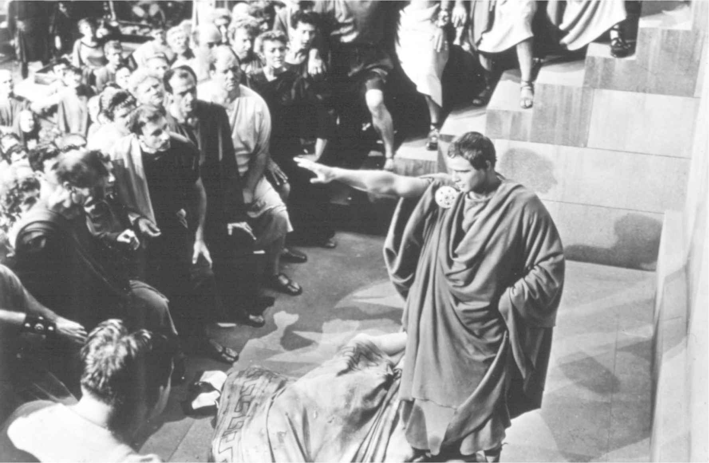
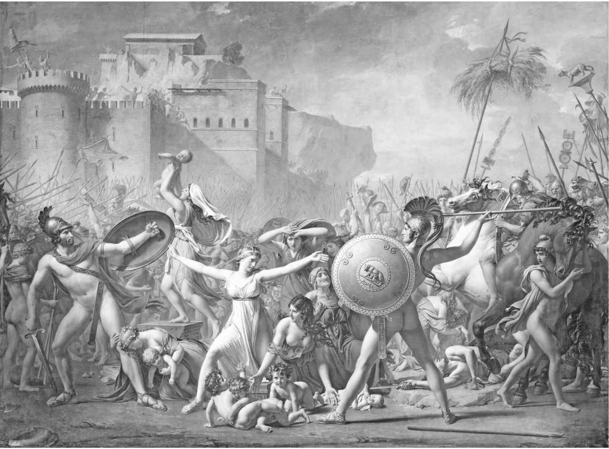

时至今日，罗马共和国灭亡已逾两千年，但其遗产却被保留下来。从废墟中诞生的罗马帝国沿用罗马共和国的传统，尽管这时皇帝独裁已取代了元老院集体统治。罗马帝国渐渐皈依基督教又为其增添了新的元素，对古罗马的尊敬又受制于针对异教根源进行的谴责，这一张力清晰地体现在来自希波的奥古斯丁（公元354—430）所著的杰作《上帝之城》中。在此后的多个世纪里，罗马共和国的影响力逐渐消亡，直到为人熟知的文艺复兴时代，古典文学和艺术迎来伟大的复苏。从马基雅维里的政治哲学到莎士比亚的戏剧，罗马共和国历史上的理想与教训、英雄与恶棍在一个新的世界中得到重生。伴随着美国和法国爆发的伟大革命，其间从罗马共和国乌托邦处获取灵感，人们对罗马历史的欣赏在动荡的18世纪具有了更大的意义。时至今日，罗马共和国遍及从知识分子话语到电影电视作品等西方文化的各个角落，以许多甚至不易察觉的方式影响着我们的生活。
刻于奥古斯都陵墓上的追悼铭文《功德碑》的开篇词，让墓主作为共和国捍卫者的自画像变得不朽。奥古斯都拒绝暗指其实施独裁统治的一切称号，他喜欢用更传统的指称“princeps ”，即“第一公民”来称呼自己。事实上，奥古斯都就是皇帝，他治理的共和国的架构仅存在于名义上。元老院不再拥有权力，其功能是为了支持奥古斯都提出的请求，年度官员由皇帝任命而不再通过公民大会选举产生，军队听命于作为国家代表的皇帝。到公元14年奥古斯都逝世时，皇帝统治已牢固建立起来。罗马共和国让位给了罗马帝国。
但是，奥古斯都的形象，即所谓“元首制”（Principate）的门面，其本身就是将共和国继续保留在罗马的一个证明。奥古斯都从尤利乌斯·凯撒的命运中吸取教训，后者毫无遮掩的独裁统治直接导致其被刺身亡。奥古斯都对元老院怀有敬意，捍卫共和国价值观，同时尊崇道德和宗教。他安抚了经历整代人的内战而疲惫不堪的民众，并准备用传统的方式接受赋予他的权力。奥古斯都的直接继承人被迫做出类似的让步。公元1世纪，每一名赤裸裸地崇拜独裁政权的皇帝，从卡里古拉到尼禄再到多米提安，全部被消灭掉。如果不认可罗马共和国的过去，第一公民是无法实施统治的。
在日常生活层面，从共和国到帝国的转变虽是渐进式的，但变化深远。一个时空旅行者若从公元前1世纪早期进入到公元1世纪末期，他对于眼前的不同或许与其观察到的相同之处所产生的惊讶程度大致相当。服装风格、房屋设计以及阶层和性别的差别鲜有不同。人们继续阅读罗马共和国时代创作的文学作品，其艺术也被用来为帝国服务。但也有新元素的出现，因为“罗马人”这一称呼的定义在帝国时代发生了巨大的变化。在罗马共和国时期，只有在同盟者战争后，罗马公民权才被给予其他意大利民族以及受罗马特别恩宠的非意大利人。在整个公元1世纪和2世纪，罗马人的身份遍布地中海，直到3世纪，罗马公民权才扩展至整个帝国。在一个日益罗马化的世界，共和国的传统在罗马以外的地方缺乏纽带。高卢、西班牙或者希腊东方行省内新增的罗马人口没有动力庆祝当年抵抗罗马共和国军队而遭遇的失败斗争。有关罗马共和国的知识随着岁月的流逝而衰减，虽然直到公元4世纪，对于那些骄傲地宣称自己是某些伟大的罗马共和国英雄们后裔（尽管这是虚构出来的）的贵族家庭，这些知识显得依然重要。
到4世纪，一个新事物已在罗马世界深深扎根。在罗马第一个基督徒皇帝君士坦丁于312年皈依后的数年，基督教已发展成在罗马帝国处于支配地位的宗教。对基督徒来说，罗马共和国的历史既有一种吸引力，又是一个挑战。许多基督徒，尤其是他们中的知识精英们以拥有罗马遗产为傲。但是，他们已背弃了曾造就罗马霸权的那些古老神祇（根据罗马人的传统说法）。公元410年哥特人攻破罗马是该城在800年来首次遭遇浩劫。这一历史事件将宗教矛盾带到一个新的高度。罗马城的陷落是否源于基督徒抛弃罗马神灵而引发的诸神愤怒？正是在此背景下，希波的奥古斯丁写出了最具影响力的从基督教角度诠释罗马共和国的早期论文，并将其并入自己的巨著《上帝之城》中。奥古斯丁看待罗马共和国历史的视角和李维或西塞罗十分不同。他反对那些依然将罗马共和国的兴起和衰亡归因于罗马人的道德以及古老神灵的看法。相反，奥古斯丁对早期罗马人及其诸神进行谴责。当罗马人崇拜的魔鬼因其罪恶而闻名时，又怎能说它们能够给予追随者以美德呢？朱庇特就是一个连环通奸者，维纳斯抛弃了丈夫伏尔甘去勾引马尔斯。罗马共和国宗教中的诸多神灵只不过是个笑料，同时他们也并未能保护罗马免遭皮洛士和汉尼拔的摧残。早期罗马配不上“充满美德的黄金时代”这一名声。罗马历史肇端于罗慕路斯杀死雷穆斯以及劫掠萨宾妇女的鲜血中。卢克雷提娅因自尊而非出于基督徒妇女卑微的谦逊而自杀。罗马人喜欢标榜“忠诚”（f ides ），但又摧毁了他们的盟友。他们对尊威和荣耀的痴迷引发的权力欲望使晚期罗马共和国深陷内战的泥沼。因此，奥古斯丁手持罗马共和国的传统价值观反过来攻击罗马人，并指出只有随着基督的到来，罗马人才能了解到真正的美德。
不过，奥古斯丁也确实承认罗马共和国具有的某些卓越之处。和罗马前辈一样，他也将罗马的帝国征服视作神圣天意，即基督上帝的意旨。为何上帝允许异教罗马拥有支配整个古代世界的权力？在奥古斯丁眼中，上帝将这一统治权优先交给那些人而非其他任何人手中。他们出于名誉、赞美和荣耀而服务于自己的国家。他们探寻发现祖国安全之荣耀高于个人之安危。他们压制对金钱及诸多其他不端之事的贪婪，以拥护其中一点，即对赞美之爱。
罗马人对荣耀的渴求如果本身并非一项美德的话，那么它抑制了更加严重的罪恶不断滋生，从而赢得了上帝的爱。罗马共和国的英雄们拥有基督徒应当学习并赶超的优秀品质。辛辛那图斯来自垄亩，接过独裁官一职，然后回归贫寒。盖乌斯·法布里奇乌斯拒绝了皮洛士送上的贿赂。
正是出于对其卓越品质的奖励，罗马人在尘世的地位被拔得很高。但他们将无法获得最高的那份奖赏，它们是留给在天堂里的基督徒的。不像真实、永恒的上帝之国，罗马共和国如尘世间的所有领域一样，都是暂时性的。
奥古斯丁死后的数世纪中，有关罗马共和国的知识变得湮灭不闻。在东方，罗马帝国以拜占庭帝国的形式存活下来，而拜占庭作家继续展现出对古罗马的兴趣，声称要保护罗马的历史传统。但在罗马帝国灭亡后的西部世界，罗马共和国的英雄和故事被圣经《新约》和《旧约》中记载的人物和事迹所替代，就像奥古斯丁和其他教会神父们的著作取代了普劳图斯、卡图卢斯和西塞罗的作品一样。一件保存于罗马梵蒂冈博物馆的手抄本最初藏在意大利北部的博比奥修道院内。大约7世纪末，一个无名僧侣在今天仅存的这部完整的西塞罗《论共和国》复本之上，誊写了拥有无数版本的奥古斯丁的《诗篇注释》。西塞罗这部伟大的政治学论文的残稿，以及无法追忆的无数亡佚的共和时代的作品，是有关罗马共和国的记忆在中世纪走向衰落的一个悲哀的证明。
西方对罗马共和国以及古人曾经生活过的那个世界的兴趣随着14世纪文艺复兴的开始而复苏。对于古典艺术和文学的欣赏首先发端于像佛罗伦萨这样的意大利城市，罗马文化的兴起在这些城市里获得了特别的反响。意大利学者如彼特拉克（1304—1374）开始收集散落在各地的罗马共和国文化的遗物，罗马共和国的那些理想也被用来服务于新的社会和政治模型。随着文艺复兴传播至整个欧洲，古罗马以不同的形式被重新诠释以广泛满足各类需求。这一改造过程具有的绝对多样性，体现在处于文艺复兴时代两个截然不同顶峰的两人所写的著作中：佛罗伦萨人马基雅维里的政治哲学，以及英国人威廉·莎士比亚的戏剧。
在今天，尼科洛·马基雅维里（1469—1527）这个名字通常和“马基雅维里政治原则之信徒”（Machiavellian）一词所表达的愤世嫉俗和阴险狡诈的权力实践联系在一起。马基雅维里最著名的作品是《君主论》，在书中他为统治者如何获得和维持权力提供了建议。同时，就共和国政府本质这一问题的探讨，特别是关于他自身所在的城市佛罗伦萨，马基雅维里也是首屈一指的思想家。他孜孜以求的共和国模型不可避免地将他的目光聚焦在了古罗马。正如他在《论李维前十书》开篇附近所谈到的那样：
尽管取了这么一个标题，但马基雅维里的这部著作涵盖了整个罗马共和国时期，而不仅仅只是涉及李维《建城以来史》的前几卷。通过罗马共和国历史上的事例，它为国家和政治家应如何行动提供了实践性纲领。这些例子涵盖了从“阶层斗争”及贵族和平民政府之冲突，到从汉尼拔和西庇阿·阿非利加努斯的政治生涯汲取的军事建议等等。透过马基雅维里实用性的眼光而非奥古斯丁的宗教视角，作为获取灵感之源，罗马共和国在文艺复兴时期意大利复杂的政治环境中获得了新的重视。
当然，马基雅维里充分意识到了将古罗马标榜为共和国理想模型的缺陷。罗马的成功为自身带来了毁灭，它的社会和政治结构无法应付帝国的扩张。对马基雅维里而言，原因非常明确：
因为这两点，罗马共和国面临着同人民的矛盾，并逐渐失去了对贵族及其军队的控制。马基雅维里为罗马随着皇帝的出现失去自由而感到痛心，但他也没有找到医治的良药，因为这就是罗马为其胜利所付出的代价。他认为，一个共和国必须在两条道路上做出抉择：是像罗马一样意在扩张，还是像古代斯巴达或今天的威尼斯一样更倾向于保全自身。马基雅维里的选择非常明了。那些拒绝扩张的国家或许能稍长时间地维持统治，同时避开困扰罗马共和国的一些冲突，但这么一来也就远离了荣耀之路。所有国家要么兴盛，要么灭亡，最好是接受不和以及野心带来的挑战，“将其视作无法避免的灾祸，我们才能实现古罗马般的伟大”。
伊丽莎白时代英格兰的剧院和马基雅维里的佛罗伦萨政治委员会是两个截然不同的世界。但对威廉·莎士比亚（1564—1616）来说，罗马共和国对他的吸引力并不小。在生动呈现古罗马上，莎士比亚戏剧的影响力不逊于任何现代媒体。莎士比亚对罗马人的兴趣体现了他那个时代的潮流（已知最早的古罗马历史戏剧是其对手克里斯托弗·马洛受维吉尔的《埃涅阿斯纪》启迪而写的《迦太基女王狄多》）。但正是莎士比亚的作品最佳地保留了伊丽莎白时代的人看待罗马史的视角。有三部莎士比亚的戏剧是基于罗马历史事件创作的，分别是：《尤利乌斯·凯撒》（1599）、《安东尼与克莱奥帕特拉》（1606）以及《科利奥兰纳斯》（1608）。这三部作品均大量参考了普鲁塔克的《传记集》，其由托马斯·诺斯爵士于1579年翻译成英文，尽管普鲁塔克并非莎士比亚创作的唯一来源。《泰特斯·安德洛尼克斯》（1592）和《辛白林》（1610）的剧情同样以古罗马为背景，但被设置在共和国衰亡之后。《错误的喜剧》（1594）中的故事发生在希腊亚细亚，但它以普劳图斯的罗马喜剧为原型。除戏剧作品外，莎士比亚还在他的一部叙事诗中描绘了引向罗马共和国诞生的事件，即《卢克丽丝受辱记》（1593—1594）。
不像马基雅维里，莎士比亚对于被视作理想国家的罗马共和国几乎没有什么兴趣。当时的英格兰是个君主制国家，英国国王的名字出现在许多最优秀的莎士比亚历史剧中。但是，罗马共和国的社会和政治矛盾在当时同人民代表、贵族特权及独裁权力相关的辩论中引发了强烈共鸣。莎士比亚为与罗马共和国相关的戏剧所选择的主题反映了当时的辩论及诗人在选角和戏剧潜力方面的敏锐眼光。罗马对外扩张及政治上相对稳定的那几个世纪被忽略了。取而代之的是，莎士比亚将其笔墨放在了共和国的诞生和衰亡这两个端点上。
在《卢克丽丝受辱记》（“卢克丽丝”即卢克雷提娅）中，莎士比亚首先以诗歌的形式探究了罗马共和国的起源，并以布鲁图斯誓言复仇以及反抗塔克文·苏佩布结尾。差不多20年后，通过对或许只是传说人物的盖乌斯·马尔奇乌斯·科利奥兰纳斯的发掘，莎士比亚又回到罗马共和国这一题材。被对手流放出罗马城的科利奥兰纳斯和罗马的敌人结盟，决意报仇。他对罗马的进攻最终因母亲和妻子的苦苦请求而放弃。此后，他因背叛众人而被新盟友杀害。莎士比亚将他的《科利奥兰纳斯》放在“阶层斗争”的开始阶段，而骄横的贵族和民众反复无常的拥护之间的对比在观众中间激起了明显的反响。和历史上的债务奴隶制无关，莎士比亚戏剧中的穷人因贵族囤积粮食而被激怒。在《科利奥兰纳斯》剧本创作前夕，这种不满激发了血腥的骚乱，被称作“米德兰暴动”。悲剧英雄身陷不同党派和他自己的骄傲营造的困境中，其行为暴露的紧张局势最终由于他的死亡而未能得到解决。
对当代观众来说，《科利奥兰纳斯》是莎士比亚戏剧中的一部知名度较小的作品。但《尤利乌斯·凯撒》和《安东尼与克莱奥帕特拉》就不一样了。总的来看，这两部戏剧讲述了从凯撒担任独裁官到屋大维（未来的奥古斯都）取得胜利之间的历史。莎士比亚再次对导致罗马共和国灭亡的内在原因缺乏持久兴趣。但凯撒被杀引发的政治继承和弑君的正当性这两个相伴而生的问题，在都铎和斯图亚特王朝时期的英格兰备受争议。对莎士比亚来说，这些问题和他剧中的角色体现的人性纠缠在一起。剧中人物的复杂动机既不是罗马式的，也不是伊丽莎白式的，而具有普世性。莎士比亚的成就在安东尼于凯撒葬礼上的那篇著名演说中得到了集中体现：

图12 在根据莎士比亚《尤利乌斯·凯撒》剧本改编的电影（1953）中，马龙·白兰度所扮演的马可·安东尼
（《尤利乌斯·凯撒》，第三幕，第二场） [3]
在《尤利乌斯·凯撒》中，更受人喜爱的角色到底是凯撒还是勃鲁托斯（即历史上的马尔库斯·布鲁图斯），观众对这一问题从未达成一致，而这正是莎士比亚的天才之处。凯撒所具有的野心是非常典型的罗马人品质，而痴迷于勃鲁托斯身上体现出的荣誉感或尊威同样如此。但这些都是普世性价值观，它们并不和安东尼对朋友的忠诚以及随后众人看到残缺不全的凯撒尸体而产生的恐慌有什么差别。勃鲁托斯是一个正人君子，他因其死亡而被赞颂为“最高贵的罗马人”。但荣誉感驱使他去刺杀待他如亲子的那个人。莎士比亚剧中的勃鲁托斯要比普鲁塔克笔下的同一人物更具野心，也更具人性。同样的分析可以用在《安东尼与克莱奥帕特拉》剧中的主人公上，尽管无论是这对骄奢淫逸的夫妇还是精于算计的屋大维都没有勃鲁托斯那样充满吸引力或具有悲剧性。不管缺乏浪漫主义的纯化论者对莎士比亚剧中的历史精确性问题提出什么样的批判，莎士比亚仍将古代罗马人生动地刻画了出来，其采用的手法鲜有他人能够匹敌，而正是在这种手法中蕴含着他的罗马戏剧之所以拥有持久吸引力的奥秘。
文艺复兴对于罗马共和国记忆产生的影响极其深远，这种影响没有比在18和19世纪大革命时代的激荡岁月里表现得更为明显的了。罗马古老知识的复兴为席卷欧洲和新大陆日益高涨的反对专制王权的斗争又添了一把火。罗马共和国为去君主化的政府提供了一个理想范本。在这样一个国家中，在至高无上的人民以及由人民选举的官员管理下，自由通过法制得到保障。托马斯·霍布斯在《利维坦》（1651）一书中已将英格兰内战与西塞罗的影响，以及“被教导仇视君主制的罗马人的观念”联系起来。在18世纪的美国和法国，以罗马为模板，共和派的观点不断积攒力量，拥有截然不同的命运走向。
一名21世纪的旅行者在华盛顿特区或许依然能够察觉到罗马共和国对美利坚合众国的开国元勋们产生的影响。当新的联邦政府在1791年成立时，城市的那些地标被重新命名以向罗马表达敬意。古斯克里克（Goose Creek [4] ）更名为台伯克里克（Tiber Creek），詹金斯山（Jenkins Hill）变成了卡匹托尔山（Capitol Hill [5] ）。美国议会的召集地就叫卡匹托尔，这让人想起罗马的至尊至大朱庇特神庙。对于所有参与到为合众国宪法制定而辩论的那些人来说，这些关联十分熟悉。许多人借用罗马共和国的名字，如布鲁图斯、加图和辛辛那图斯来发表自己的观点。《联邦党人文集》（1787—1788）的作者詹姆斯·麦迪逊和亚历山大·汉密尔顿—两位美国宪法的主要起草人—就用过普布利乌斯这一笔名。这让人想起了在罗马共和国和布鲁图斯并肩作战的那位普布利乌斯·瓦列里乌斯·普布利考拉。
这些影射并非只是为了华丽的修辞。对于形塑美国的先驱者来说，罗马共和国提供了一个现实可行的模板，借此他们可以获得指引。约翰·亚当斯就是这批人中的一员。他在1787年发表了那篇杰出的论文—《为美利坚合众国政府宪法辩护》。作为继乔治·华盛顿后的美国第二任总统，亚当斯笃信历史上以罗马为原型的均衡政体。他最为青睐的政治家是西塞罗，后者对共和国政府的设想被亚当斯放在了序言部分以示敬意：
在西塞罗的理想共和国中，政府的三个分支分别是官员、元老院和公民大会。而根据亚当斯的宪法，这三个分支变成了总统（掌握执政官的裁决权）、参议院（作为审核机构，负责批准条约以及监督其他分支）和众议院（负责法律的通过和宣战）。像马基雅维里一样，亚当斯及其同辈知道罗马共和国最后灭亡了。他们的解决方案有二。首先，出于实际考虑，以及为了避免被许多人认为是简单的多数人民主而造成的暴政，选举产生的众议院替代了公民大会。一般民众就被排除在扮演政府任何集体角色之外，作为元老院精英的西塞罗一定会对此报以热心的支持。第二，再次和西塞罗的理想相契合，这种制度的监督和制衡功能得到了加强。如果任何一个分支或者个人掌握了过多的权力，就像在罗马共和国灭亡之时所发生的那样，那么其他分支将联合起来进行抑制。因此，新美国从过去的历史中得到教训，实现了罗马自身得而复失的稳定。
法国的共和主义从未获得像美国那样的凝聚力和稳定性，但它依然借鉴了许多古典的范例。在1789年大革命爆发的前几年，法国人对罗马共和国的兴趣十分强烈。孟德斯鸠的《论法的精神》发表于1748年，该著作对美国的建国先父们产生了深远影响，尤其是他对政府行政、立法和司法三个功能分立的坚持。然而，他从罗马历史中吸取的教训是极其不同的。根据孟德斯鸠的说法，“在将国王驱逐后，罗马政府本应该走上民主制”。然而这一切并未发生。元老贵族集团继续把持着权力，同时，随着罗马霸权的扩张，个人财富和野心将罗马引向暴政。孟德斯鸠总结说：“对一个共和国而言，拥有一小块领土是正常的。否则，共和国是不可能持续存在下去的。”一个像罗马这样大的共和国必将不可避免地走向腐败并陷入专制主义而抛弃对美德的爱，后者被孟德斯鸠视作所有共和政府赖以生存的一个根本原则。
卢梭在他的《社会契约论》（1762）中采用并完善了孟德斯鸠对罗马共和国的看法。任何一部作品都未能像这本书一样激发了法国大革命的理想。在寻求理想社会的过程中，卢梭将目光投向古代罗马，试图理解“地球上最为自由和最为强大的民族是如何行使其至高无上之权力的”。卢梭对自由通过法律之规章得以保障的强调和美国同辈们的观点密切契合。但卢梭高度重视人民主权和保持公共道德的需求，以此防止滑向专制主义，就像孟德斯鸠所预言的那样。因此，在《社会契约论》中，卢梭的首要目标是鼓励公民过一种其理想中的共和国政府所需要的德行生活。根据这些主张，卢梭将罗马共和国视作他所生活的时代需致力效仿的一个象征。在罗马共和国时代，卢梭认为：
这种人民主权论转而受到罗马美德的保障。卢梭所认为的古罗马人的基本特点就是美德，正如古犹太人的特点是宗教，迦太基人的特点是商业一样。甚至罗马共和国堕入无序和专制都丝毫不影响卢梭对罗马人民的赞誉，在卢梭看来，罗马人民“从未停止选举官员，通过法律，裁决案件，处理各种公私事务”。卢梭将罗马共和国灭亡的原因直接归为导致内战的“贵族制的滥用”。
无论是卢梭对罗马政治做出的解读还是他对罗马美德的景仰都无法承受严格的历史批判。但是卢梭产生的影响是深远的，其关于古罗马的看法对法国读者的吸引力不亚于约翰·亚当斯的理论在美国国父们中产生的效应。事实上，通过两人对罗马共和国历史所做的截然不同的判读，卢梭和亚当斯揭示了美国和法国的共和主义踏上的不同之路，后者在法国大革命中发挥了作用。不同于亚当斯所推崇的权力监督和制衡这种西塞罗模式，法国的革命家们沿着卢梭的指引前行，强调对人民主权和公共道德的捍卫。试图建立“美德共和国”的愿望在罗伯斯庇尔恐怖时代达到高潮。在不到10年间，法国重演了500年的罗马史。它推翻君主制后建立了共和国，接着共和国又在无序状态下瓦解，最后迎来的是独裁政权。但罗马的吸引力是持久的，其因雅克—路易·大卫的名画《萨宾妇女的调停》（1799）而不朽，这幅画在作为法兰西第一执政的拿破仑·波拿巴篡夺权力的同一年被揭示。

图13 雅克-路易·大卫，《萨宾妇女的调停》（1799）
从罗马帝国到教父时期，再到文艺复兴，最后至大革命时代，不同世代都在对共和国的记忆进行重新解读，以服务于这个正在变化的世界的需求。这是一个持续的过程，一直前进，未加中断，直至今日。在19世纪，关于罗马共和国时代的征服有一个流行的“防御性帝国主义”的解读。也就是说，罗马持续不断的战争并非因其侵略性和贪婪性，而是出于保护罗马自身及其盟友的安全之需要。这样的解读在李维和其他的罗马史料中找到了支持。但“防御性帝国主义”同样为当时欧洲的帝国权力提供了正当性，这些欧洲强国以类似的借口扩张自己的海外帝国。在20世纪下半叶，随着对罗马式好战越来越多的效仿以及在与驱使罗马进行扩张同样的压力下，这些帝国轰然解体。更晚近的学者对政治和战争这些传统领域之外的罗马共和国的生活产生了更强烈的兴趣。21世纪早期以来，对研究者来说，罗马人的家庭纽带、性别角色以及社会和宗教价值观有了新的意义。
罗马共和国也继续渗透在西方文化中。其中某些影响因扎根太深以至于被人们轻易忽视。帝国时代遍及欧洲许多地区的罗马道路和城市网络首先成形于罗马共和国时期，作为晚期罗曼语之根基的拉丁语的传播同样如此。罗马共和国时期出现的一些术语和概念在今天的政治辩论中具有重要作用，同一时期产生的词语和图像也激发了现代作家和艺术家的灵感。罗马共和国跌宕起伏的历史在我们的想象里从未停止拨动我们的心弦，无论是遭高卢洗劫的罗马城，还是穿越阿尔卑斯山的汉尼拔，抑或是卢比孔河岸边以及三月十五日殉难的尤利乌斯·凯撒。
在转向罗马共和国的历史寻求灵感时，每一代新人都能在试图吸取某些教训的同时，揭示出自身的某些特性。今天，当透过2000余年的历史回顾以往，罗马共和国的灭亡再次吸引了大众的眼球。罗马向外扩张、不断取得胜利的年代很少出现在电影和电视作品中，制片人和观众都更加喜欢罗马共和国那充满暴力和悲剧的结尾。从柯克·道格拉斯主演的经典电影《斯巴达克斯》（1960）到BBC制作的电视剧《罗马》（2005），共和国的最后岁月对那些渴望重现古罗马历史的人们产生的吸引力十分明显。但是，在这个变化比以往都更为迅速的世界里，我们依然希望能从罗马共和国的失败以及向罗马帝国的转变中，为自我寻求经验和教训。
图14 塞伦·希德在HBO/BBC系列剧《罗马》中扮演的尤利乌斯·凯撒